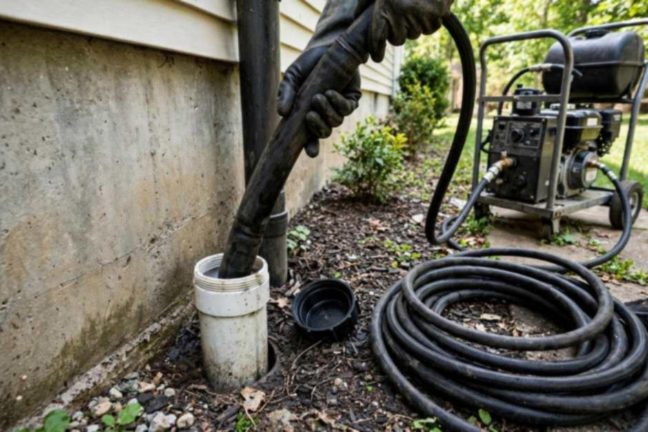

Video Inspection for Sewer Lines
Sewer Camera Inspection Belleville IL With Recorded Video
A camera inspection looks inside a sewer line so a repair decision rests on what is actually present, rather than on guesswork about a buried pipe. Video can show cracks, offsets, root intrusion, standing water, and blockages, and it can mark where a condition sits along the line in Belleville, IL.
Based at 1610 W Main St, Belleville, IL 62220Monday through Friday, 8:00 AM to 4:30 PM. Closed Saturday and Sunday.Google rating 5.0 from 3 reviews
What the Visit Covers
What Is Included in a Sewer Camera Inspection
A sewer camera inspection is a diagnostic visit, not a repair. The camera travels through the line, the picture is watched as it moves, and findings are recorded so the condition can be discussed with evidence in hand. When a defect is found, the discussion may turn to sewer line repair options, or to monitoring where repair is not indicated.
Camera Run Through the Line
A small camera is guided through the sewer line from an access point, sending live video back as it travels. The picture shows the inner wall, joints, and any material or growth that narrows the opening.
Condition Notes as Video Moves
Cracks, breaks, offsets, bellies, root intrusion, scale, and standing water are noted as they appear on screen. Each observation is described by type and position, so later discussion refers to visible evidence rather than to a general impression.
Location Along the Line
A locator can mark the camera position from above ground, tying a defect to a place along the run. That location helps explain where digging or other work would be needed if repair follows, and where it would not.
Recorded Video for Review
The inspection is recorded so the footage can be reviewed again after the visit. A recording also allows a homeowner to share what was seen with family, a buyer, or another advisor before deciding on a course of action.
Written Findings in Plain Terms
Findings are summarized in writing, with each condition named and its position noted. The summary separates what was seen from what is recommended, so a reader can follow the reasoning and ask questions about any part of it.
Discussion of Next Steps
After the inspection, options are discussed in light of the footage, including repair, cleaning, monitoring, or no action where the line looks sound. No repair is started on the strength of the inspection alone without that discussion.
A Diagnostic Visit in Belleville, IL
Camera Inspection Before a Repair Decision
Hinkle Plumbing Company is based in Belleville, IL, and a camera inspection is handled as a careful look before any repair decision, with findings shown and explained rather than assumed, so the homeowner sees the evidence as well.
Belleville homes cover a range of ages, and older lines may be expected to include cast iron drains and clay laterals, with joints that invite root growth. A camera inspection checks that expectation against the line itself, rather than treating age alone as a diagnosis. It suits a repeated blockage, a backup in heavy rain, or a purchase decision. Findings may inform drain cleaning discussion, and the City Sewer Lateral Repair Program is mentioned in general terms, with readers directed to check City program details.

How we workA camera view of a sewer line interior, shown for illustration.
How an Inspection Proceeds
What Happens During a Sewer Camera Inspection
The steps flex with the condition of the job, but the sequence stays the same.
Access Is Located
An access point is located and checked before the camera enters the line. The cleanout or another suitable opening is used where one is present, and the route into the line is confirmed before recording starts.
Camera Travels the Line
The camera moves through the line while video is watched on a monitor. The operator pauses at joints, connections, and any change in the pipe wall so each feature can be seen clearly before moving on.
Conditions Are Noted
Cracks, offsets, bellies, roots, scale, and standing water are noted with their positions along the run. The notes stay close to what the video shows, without adding a cause that the picture does not support.
Location Is Marked
Where location marking is used, the camera position is marked from above ground at points of interest. The marks connect a defect on screen to a place in the yard or under a floor, for later discussion.
Findings Are Explained
The recording and written findings are reviewed with the homeowner, and questions are answered from the footage. Options for repair, cleaning, or monitoring are discussed only after the evidence has been reviewed together.
Reading the Video
What a Camera Inspection Can Show
Video evidence is useful only when it is read with care. Each pattern below is described as it appears on screen, with the limits of what a picture alone can establish kept in view.
Cracks and Breaks
A crack appears as a line across the pipe wall, while a break shows a gap or missing piece. The picture records the extent that is visible, and further work may be needed to judge what lies beyond the wall.
Offsets and Joint Gaps
An offset shows one pipe section sitting higher or lower than its neighbor at a joint. A gap at a joint can admit soil or roots, and the video shows whether the opening is slight or wide at that point.
Bellies and Standing Water
A belly is a low section where water stands instead of draining away. Video shows the water level and the length of the low run, which helps explain slow drainage and material settling in that section.
Root Intrusion
Roots enter through joints and cracks, appearing as fine strands or thicker masses inside the pipe. The video shows how much of the opening is taken up, and whether roots are present at one joint or along a longer run.
Blockages and Buildup
Grease, scale, and settled material narrow the opening and appear as buildup on the pipe wall or floor. Video distinguishes a soft blockage that cleaning may address from a hard defect that cleaning alone will not correct.
Line Condition and Material
Older lines in Belleville may be expected to show cast iron or clay, while later lines may show PVC. The camera checks the material in place, and notes corrosion, wear, or patching that age alone would not reveal.
When Inspection Helps
Common Reasons to Arrange a Camera Inspection
Inspection is often arranged when a symptom keeps returning, when a purchase is under consideration, or when a repair choice needs evidence before work is agreed. The patterns below describe those situations in general terms.

Repeated Blockages That Return
A common call describes a drain that clears and then blocks again, with a fixture affected each time. Cleaning alone may restore flow for a while, yet the underlying condition in the line remains unseen. A camera inspection in that pattern looks for roots at joints, a belly holding water, an offset catching material, or buildup narrowing the opening. The footage gives the homeowner a visible reason for the return of the symptom, and a basis for choosing between further cleaning, repair, or monitoring of the line.
A Purchase Decision in an Older Home
A common call comes from a buyer who wants to see the sewer line before committing to a purchase, especially where the home is older and the line material is not recorded. A camera inspection in that pattern records the line from access to the main connection, noting cracks, roots, bellies, and standing water as they appear. The recording and written findings give the buyer a record to review with advisors, and a clearer picture of whether repair, monitoring, or no action fits the line as found.
Symptoms That Point to Inspection
Signs That a Camera Look May Help
Most calls fall into a few patterns. Knowing which pattern applies decides what the visit involves.
Slow Drains Across Fixtures
When several fixtures drain slowly at once, the cause may sit in a shared line rather than in one trap. A camera look can show whether roots, buildup, or a low section is narrowing the shared run.
Backups in Heavy Rain
A backup that appears during heavy rain may involve a line that surcharges when stormwater adds to the flow. Video can show defects that worsen under that load, while a backwater valve may be discussed as one option to consider.
Odors Near Drains
A persistent odor near a drain can point to a dry trap, a vent matter, or a defect in the line below. A camera inspection checks the line portion of that question, and other causes are considered separately where the video looks sound.
Damp or Sunken Ground
Damp patches or sunken ground above a sewer run can raise a question about a leak below the surface. Video from inside the line can confirm or rule out a visible defect at that section, before any digging is discussed.
Scope and Cost Factors
What Shapes the Cost of an Inspection
Cost depends on access, line length, and what the inspection must establish.
Access and Line Length
An inspection with a clear access point and a short run involves less setup than a line that is hard to reach or runs a longer distance. The route, the number of bends, and the depth of the line all shape the work involved.
What Must Be Established
A look for a single defect differs from a full recording for a purchase decision, with location marking and written findings. The scope of the record, and whether marking is requested, shapes the time and work involved.
Follow-On Work
Inspection findings may lead to cleaning, repair, or monitoring, and each of those is a separate scope with its own factors. Call (618) 677-6556 to discuss the inspection scope and the factors that apply to the line in question.
Reviews from Google
What Customers Say on Google
★★★★★
“Very prompt and responsive, the worker was friendly and informative! Will use this company again!”
★★★★★
“Don did an outstanding job for me when I needed him and highly recommend his business”
★★★★★
“Rated 5.0 out of 5 across 3 Google reviews, all five stars.”

What does a sewer camera inspection show?
It shows the inside of the sewer line on video, including cracks, offsets, bellies, root intrusion, buildup, and standing water, with each condition tied to a position along the run. The recording and written findings give a homeowner visible evidence to review, rather than a conclusion based on symptoms alone. A camera cannot see beyond the pipe wall or judge soil conditions outside the line.
Does a camera inspection repair the sewer line?
No. A camera inspection is a diagnostic look that records what is present inside the line. Repair, cleaning, or monitoring may follow from the findings, and each is discussed separately after the footage has been reviewed. Keeping diagnosis apart from repair helps ensure that work is chosen for a visible reason, and that no repair is started without that discussion.
Do I need a permit for a camera inspection?
No permit claim is made for the inspection itself. If repair work follows, the position is as follows. The City of Belleville requires a permit before plumbing work begins (§152.05(A)); direct replacement of a toilet, sink, faucet, or other appliance is exempt, except hot water heaters require an electrical or gas permit (§152.05(B)(3)).
What affects the cost of a sewer camera inspection?
Access, line length, bends, depth, and the scope of the record all affect cost, including whether location marking and written findings are requested. Follow-on cleaning or repair is a separate scope. Call (618) 677-6556 during weekday hours to discuss the line in question and the factors that apply, so the scope can be described before any work is agreed.
Related services
Other Plumbing Services We Handle

Sewer Line Repair in Belleville, IL
When camera footage shows a defect that needs correction, repair options are discussed from the evidence, including where the defect sits along the line.
Drain Cleaning in Belleville, IL
Cleaning addresses blockages and buildup that narrow a line. Camera findings can show whether cleaning fits the condition found, or whether repair discussion is needed.Sewer Backup in Belleville, IL
A backup is the symptom that often leads to inspection. Video can show the condition behind the backup, so the next step rests on what was seen.Mon–Fri 8:00 AM–4:30 PM
Arrange a Sewer Camera Inspection in Belleville, IL
Call Hinkle Plumbing Company at (618) 677-6556 to discuss a sewer camera inspection in Belleville, IL. Hours are Monday through Friday, 8:00 AM to 4:30 PM. Closed Saturday and Sunday. The office is at 1610 W Main St, Belleville, IL 62220.
Talk with the local team
Request Sewer Camera Inspection
Call (618) 677-6556 during office hours, Monday through Friday, 8:00 AM to 4:30 PM. Tell us what is happening and we will talk through the next step.